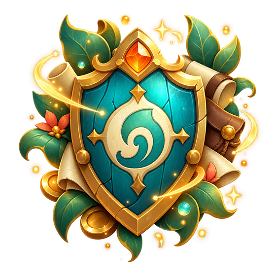

Todoofus · Carnet d’aventure
Votre aventure, bien organisée
Donjons, quêtes, métiers et élevage réunis dans un seul carnet.

Progression globale
0 / 0 objectifs terminés
0%
Exploration par zone
Zones et parcours
Filtres Affiner l’affichage
Tags spécifiques
Aucun parcours trouvé
Essayez un autre nom ou changez de filtre.